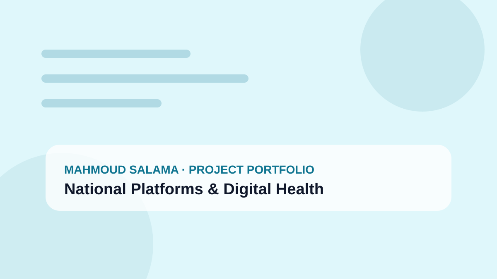

01UPA
MedIQ — Unified National Procurement & Medical Supply Ecosystem
Unified national enterprise procurement and medical-supply ecosystem spanning demand, tendering, pharmacy, inventory, assets, integrations, data, analytics, support and operations.
National & Sector PlatformsOpen MedIQ on Google Play ↗